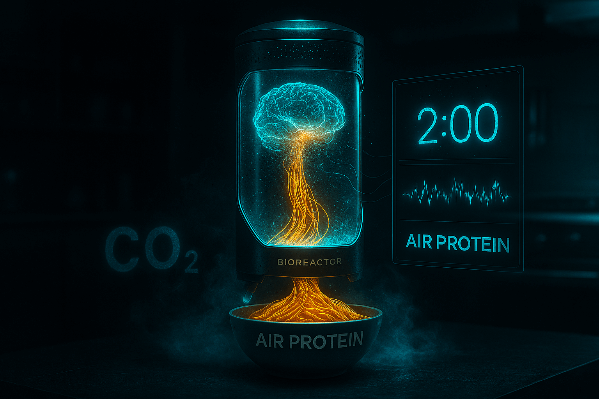
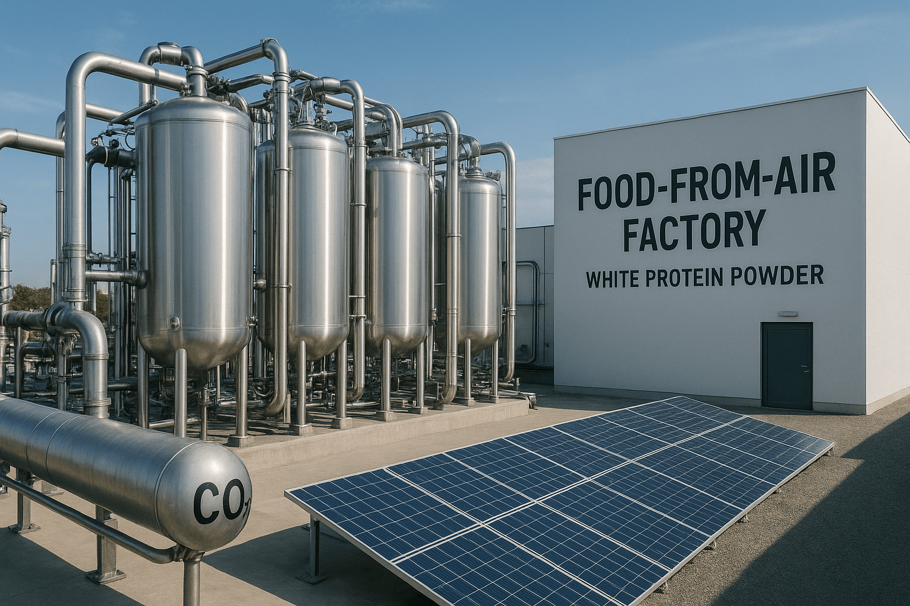

Imagine your dinner is literally made out of air. No farms. No fields. No animals. Just CO₂, a pinch of hydrogen — and in 10 hours, you have real protein that tastes like chicken, beef, or salmon.
This isn’t science fiction. This is Air Protein — and it’s already in supermarkets.
Global meat production emits 14.5% of all greenhouse gases — more than all planes, trains, and ships combined. To make 1 kg of beef, you need:
Air Protein does it in 10 hours — using the same gas we exhale.
“We take what pollutes the planet — and turn it into food.” — Lisa Dyson, CEO, Air Protein
At the heart: hydrogenotrophic microbes — bacteria that eat gas instead of sugar.
The result: Air Protein Flour — a beige powder that’s chemically identical to animal protein.
“It’s not ‘plant-based.’ It’s air-based. A bioreactor instead of a cow. Air instead of grain.”
Air Protein has launched:
Blind taste tests (2024):
| Product | Preferred Over Real Meat |
|---|---|
| Air Chicken Nuggets | 68% |
| Air Beef Burger | 61% |
Texture: juicy, fibrous — thanks to extrusion at 140°C under 30 bar pressure.
NASA’s 2025 Mars mission includes a 1m³ Air Protein reactor — enough to feed 4 astronauts indefinitely.
Critics say: “It’s Frankenfood.”
Scientists counter:
“Once, people thought bread was a miracle. Now, dinner made from air will be the new miracle.”
By 2040, 20% of global protein could come from air.
“This isn’t just innovation — it’s a second chance for the planet.” — Kiverdi (Air Protein’s parent company)
Stay Updated:
RSS Feed (auto-updates)
Push Alerts — enable in browser